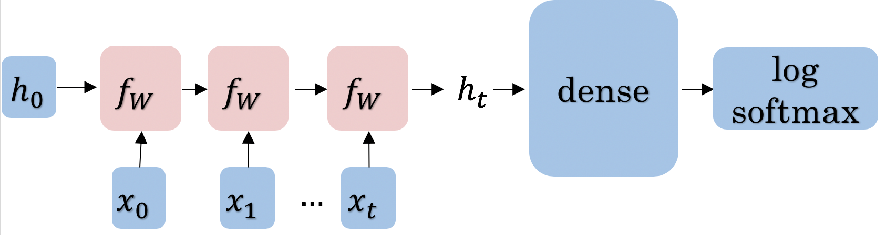

Assignment 1: Deep N-grams#
Welcome to the first graded assignment of course 3. In this assignment you will explore Recurrent Neural Networks RNN.
In this notebook you will apply the following steps:
Convert a line of text into a tensor
Create a tensorflow dataset
Define a GRU model using
TensorFlowTrain the model using
TensorFlowCompute the accuracy of your model using the perplexity
Generate text using your own model
Before getting started take some time to read the following tips:
TIPS FOR SUCCESSFUL GRADING OF YOUR ASSIGNMENT:#
All cells are frozen except for the ones where you need to submit your solutions.
You can add new cells to experiment but these will be omitted by the grader, so don’t rely on newly created cells to host your solution code, use the provided places for this.
You can add the comment # grade-up-to-here in any graded cell to signal the grader that it must only evaluate up to that point. This is helpful if you want to check if you are on the right track even if you are not done with the whole assignment. Be sure to remember to delete the comment afterwards!
To submit your notebook, save it and then click on the blue submit button at the beginning of the page.
Overview#
In this lab, you’ll delve into the world of text generation using Recurrent Neural Networks (RNNs). Your primary objective is to predict the next set of characters based on the preceding ones. This seemingly straightforward task holds immense practicality in applications like predictive text and creative writing.
The journey unfolds as follows:
Data Preprocessing: You’ll start by converting lines of text into numerical tensors, making them machine-readable.
Dataset Creation: Next, you’ll create a TensorFlow dataset, which will serve as the backbone for supplying data to your model.
Neural Network Training: Your model will be trained to predict the next set of characters, specifying the desired output length.
Character Embeddings: Character embeddings will be employed to represent each character as a vector, a fundamental technique in natural language processing.
GRU Model: Your model utilizes a Gated Recurrent Unit (GRU) to process character embeddings and make sequential predictions. The following figure gives you a summary of what you are about to implement.

Prediction Process: The model’s predictions are achieved through a linear layer and log-softmax computation.
This overview sets the stage for your exploration of text generation. Get ready to unravel the secrets of language and embark on a journey into the realm of creative writing and predictive text generation.
And as usual let’s start by importing all the required libraries.
import os
import traceback
os.environ['TF_CPP_MIN_LOG_LEVEL'] = '3'
import numpy as np
import random as rnd
import tensorflow as tf
from tensorflow.keras import layers
from tensorflow.keras.layers import Input
from termcolor import colored
# set random seed
rnd.seed(32)
import w1_unittest
1 - Data Preprocessing Overview#
In this section, you will prepare the data for training your model. The data preparation involves the following steps:
Dataset Import: Begin by importing the dataset. Each sentence is structured as one line in the dataset. To ensure consistency, remove any extra spaces from these lines using the
stripfunction.Data Storage: Store each cleaned line in a list. This list will serve as the foundational dataset for your text generation task.
Character-Level Processing: Since the goal is character generation, it’s essential to process the text at the character level, not the word level. This involves converting each individual character into a numerical representation. To achieve this:
Use the
tf.strings.unicode_splitfunction to split each sentence into its constituent characters.Utilize
tf.keras.layers.StringLookupto map these characters to integer values. This transformation lays the foundation for character-based modeling.
TensorFlow Dataset Creation: Create a TensorFlow dataset capable of producing data in batches. Each batch will consist of
batch_sizesentences, with each sentence containing a maximum ofmax_lengthcharacters. This organized dataset is essential for training your character generation model.
These preprocessing steps ensure that your dataset is meticulously prepared for the character-based text generation task, allowing you to work seamlessly with the Shakespearean corpus data.
1.1 - Loading in the Data#
dirname = 'data/'
filename = 'shakespeare_data.txt'
lines = [] # storing all the lines in a variable.
counter = 0
with open(os.path.join(dirname, filename)) as files:
for line in files:
# remove leading and trailing whitespace
pure_line = line.strip()#.lower()
# if pure_line is not the empty string,
if pure_line:
# append it to the list
lines.append(pure_line)
n_lines = len(lines)
print(f"Number of lines: {n_lines}")
Number of lines: 125097
Let’s examine a few lines from the corpus. Pay close attention to the structure and style employed by Shakespeare in this excerpt. Observe that character names are written in uppercase, and each line commences with a capital letter. Your task in this exercise is to construct a generative model capable of emulating this particular structural style.
print("\n".join(lines[506:514]))
BENVOLIO Here were the servants of your adversary,
And yours, close fighting ere I did approach:
I drew to part them: in the instant came
The fiery Tybalt, with his sword prepared,
Which, as he breathed defiance to my ears,
He swung about his head and cut the winds,
Who nothing hurt withal hiss'd him in scorn:
While we were interchanging thrusts and blows,
1.2 - Create the vocabulary#
In the following code cell, you will create the vocabulary for text processing. The vocabulary is a crucial component for understanding and processing text data. Here’s what the code does:
Concatenate all the lines in our dataset into a single continuous text, separated by line breaks.
Identify and collect the unique characters that make up the text. This forms the basis of our vocabulary.
To enhance the vocabulary, introduce two special characters:
[UNK]: This character represents any unknown or unrecognized characters in the text.
“” (empty character): This character is used for padding sequences when necessary.
The code concludes with the display of statistics, showing the total count of unique characters in the vocabulary and providing a visual representation of the complete character set.
text = "\n".join(lines)
# The unique characters in the file
vocab = sorted(set(text))
vocab.insert(0,"[UNK]") # Add a special character for any unknown
vocab.insert(1,"") # Add the empty character for padding.
print(f'{len(vocab)} unique characters')
print(" ".join(vocab))
82 unique characters
[UNK]
! $ & ' ( ) , - . 0 1 2 3 4 5 6 7 8 9 : ; ? A B C D E F G H I J K L M N O P Q R S T U V W X Y Z [ ] a b c d e f g h i j k l m n o p q r s t u v w x y z |
1.3 - Convert a Line to Tensor#
Now that you have your list of lines, you will convert each character in that list to a number using the order given by your vocabulary. You can use tf.strings.unicode_split to split the text into characters.
line = "Hello world!"
chars = tf.strings.unicode_split(line, input_encoding='UTF-8')
print(chars)
tf.Tensor([b'H' b'e' b'l' b'l' b'o' b' ' b'w' b'o' b'r' b'l' b'd' b'!'], shape=(12,), dtype=string)
Using your vocabulary, you can convert the characters given by unicode_split into numbers. The number will be the index of the character in the given vocabulary.
print(vocab.index('a'))
print(vocab.index('e'))
print(vocab.index('i'))
print(vocab.index('o'))
print(vocab.index('u'))
print(vocab.index(' '))
print(vocab.index('2'))
print(vocab.index('3'))
55
59
63
69
75
4
16
17
Tensorflow has a function tf.keras.layers.StringLookup that does this efficiently for list of characters. Note that the output object is of type tf.Tensor. Here is the result of applying the StringLookup function to the characters of “Hello world”
ids = tf.keras.layers.StringLookup(vocabulary=list(vocab), mask_token=None)(chars)
print(ids)
tf.Tensor([34 59 66 66 69 4 77 69 72 66 58 5], shape=(12,), dtype=int64)
Exercise 1 - line_to_tensor#
Instructions: Write a function that takes in a single line and transforms each character into its unicode integer. This returns a list of integers, which we’ll refer to as a tensor.
# GRADED FUNCTION: line_to_tensor
def line_to_tensor(line, vocab):
"""
Converts a line of text into a tensor of integer values representing characters.
Args:
line (str): A single line of text.
vocab (list): A list containing the vocabulary of unique characters.
Returns:
tf.Tensor(dtype=int64): A tensor containing integers (unicode values) corresponding to the characters in the `line`.
"""
### START CODE HERE ###
# Split the input line into individual characters
chars = None
# Map characters to their respective integer values using StringLookup
ids = None
### END CODE HERE ###
return ids
# Test your function
tmp_ids = line_to_tensor('abc xyz', vocab)
print(f"Result: {tmp_ids}")
print(f"Output type: {type(tmp_ids)}")
Result: None
Output type: <class 'NoneType'>
Expected output
Result: [55 56 57 4 78 79 80]
Output type: <class 'tensorflow.python.framework.ops.EagerTensor'>
# UNIT TEST
w1_unittest.test_line_to_tensor(line_to_tensor)
---------------------------------------------------------------------------
AttributeError Traceback (most recent call last)
Cell In[11], line 2
1 # UNIT TEST
----> 2 w1_unittest.test_line_to_tensor(line_to_tensor)
AttributeError: module 'w1_unittest' has no attribute 'test_line_to_tensor'
You will also need a function that produces text given a numeric tensor. This function will be useful for inspection when you use your model to generate new text, because you will be able to see words rather than lists of numbers. The function will use the inverse Lookup function tf.keras.layers.StringLookup with invert=True in its parameters.
def text_from_ids(ids, vocab):
"""
Converts a tensor of integer values into human-readable text.
Args:
ids (tf.Tensor): A tensor containing integer values (unicode IDs).
vocab (list): A list containing the vocabulary of unique characters.
Returns:
str: A string containing the characters in human-readable format.
"""
# Initialize the StringLookup layer to map integer IDs back to characters
chars_from_ids = tf.keras.layers.StringLookup(vocabulary=vocab, invert=True, mask_token=None)
# Use the layer to decode the tensor of IDs into human-readable text
return tf.strings.reduce_join(chars_from_ids(ids), axis=-1)
Use the function for decoding the tensor produced by “Hello world!”
text_from_ids(ids, vocab).numpy()
1.4 - Prepare your data for training and testing#
As usual, you will need some data for training your model, and some data for testing its performance. So, we will use 124097 lines for training and 1000 lines for testing.
train_lines = lines[:-1000] # Leave the rest for training
eval_lines = lines[-1000:] # Create a holdout validation set
print(f"Number of training lines: {len(train_lines)}")
print(f"Number of validation lines: {len(eval_lines)}")
1.5 - TensorFlow dataset#
Most of the time in Natural Language Processing, and AI in general you use batches when training your models. Here, you will build a dataset that takes in some text and returns a batch of text fragments (Not necesarly full sentences) that you will use for training.
The generator will produce text fragments encoded as numeric tensors of a desired length
Once you create the dataset, you can iterate on it like this:
data_generator.take(1)
This generator returns the data in a format that you could directly use in your model when computing the feed-forward of your algorithm. This batch dataset generator returns batches of data in an endless way.
So, let’s check how the different parts work with a corpus composed of 2 lines. Then, you will use these parts to create the first graded function of this notebook.
In order to get a dataset generator that produces batches of fragments from the corpus, you first need to convert the whole text into a single line, and then transform it into a single big tensor. This is only possible if your data fits completely into memory, but that is the case here.
all_ids = line_to_tensor("\n".join(["Hello world!", "Generative AI"]), vocab)
all_ids
Create a dataset out of a tensor like input. This initial dataset will dispatch numbers in packages of a specified length. For example, you can use it for getting the 10 first encoded characters of your dataset. To make it easier to read, we can use the text_from_ids function.
ids_dataset = tf.data.Dataset.from_tensor_slices(all_ids)
print([text_from_ids([ids], vocab).numpy() for ids in ids_dataset.take(10)])
But we can configure this dataset to produce batches of the same size each time. We could use this functionality to produce text fragments of a desired size (seq_length + 1). We will explain later why you need an extra character into the sequence.
seq_length = 10
data_generator = ids_dataset.batch(seq_length + 1, drop_remainder=True)
You can verify that the data generator produces encoded fragments of text of the desired length. For example, let’s ask the generator to produce 2 batches of data using the function data_generator.take(2)
for seq in data_generator.take(2):
print(seq)
But as usual, it is easier to understand if you print it in human readable characters using the ‘text_from_ids’ function.
i = 1
for seq in data_generator.take(2):
print(f"{i}. {text_from_ids(seq, vocab).numpy()}")
i = i + 1
1.6 - Create the input and the output for your model#
In this task you have to predict the next character in a sequence. The following function creates 2 tensors, each with a length of seq_length out of the input sequence of lenght seq_length + 1. The first one contains the first seq_length elements and the second one contains the last seq_length elements. For example, if you split the sequence ['H', 'e', 'l', 'l', 'o'], you will obtain the sequences ['H', 'e', 'l', 'l'] and ['e', 'l', 'l', 'o'].
def split_input_target(sequence):
"""
Splits the input sequence into two sequences, where one is shifted by one position.
Args:
sequence (tf.Tensor or list): A list of characters or a tensor.
Returns:
tf.Tensor, tf.Tensor: Two tensors representing the input and output sequences for the model.
"""
# Create the input sequence by excluding the last character
input_text = sequence[:-1]
# Create the target sequence by excluding the first character
target_text = sequence[1:]
return input_text, target_text
Look the result using the following sequence of characters
split_input_target(list("Tensorflow"))
The first sequence will be the input and the second sequence will be the expected output
Now, put all this together into a function to create your batch dataset generator
Exercise 2 - data_generator#
Instructions: Create a batch dataset from the input text. Here are some things you will need.
Join all the input lines into a single string. When you have a big dataset, you would better use a flow from directory or any other kind of generator.
Transform your input text into numeric tensors
Create a TensorFlow DataSet from your numeric tensors: Just feed the numeric tensors into the function
tf.data.Dataset.from_tensor_slicesMake the dataset produce batches of data that will form a single sample each time. This is, make the dataset produce a sequence of
seq_length + 1, rather than single numbers at each time. You can do it using thebatchfunction of the already created dataset. You must specify the length of the produced sequences (seq_length + 1). So, the sequence length produced by the dataset willseq_length + 1. It must have that extra element since you will get the input and the output sequences out of the same element.drop_remainder=Truewill drop the sequences that do not have the required length. This could happen each time that the dataset reaches the end of the input sequence.Use the
split_input_targetto split each element produced by the dataset into the mentioned input and output sequences.The input will have the firstseq_lengthelements, and the output will have the lastseq_length. So, after this step, the dataset generator will produce batches of pairs (input, output) sequences.Create the final dataset, using
dataset_xyas the starting point. You will configure this dataset to shuffle the data during the generation of the data with the specified BUFFER_SIZE. For performance reasons, you would like that tensorflow pre-process the data in parallel with training. That is calledprefetching, and it will be configured for you.
# GRADED FUNCTION: create_batch_dataset
def create_batch_dataset(lines, vocab, seq_length=100, batch_size=64):
"""
Creates a batch dataset from a list of text lines.
Args:
lines (list): A list of strings with the input data, one line per row.
vocab (list): A list containing the vocabulary.
seq_length (int): The desired length of each sample.
batch_size (int): The batch size.
Returns:
tf.data.Dataset: A batch dataset generator.
"""
# Buffer size to shuffle the dataset
# (TF data is designed to work with possibly infinite sequences,
# so it doesn't attempt to shuffle the entire sequence in memory. Instead,
# it maintains a buffer in which it shuffles elements).
BUFFER_SIZE = 10000
# For simplicity, just join all lines into a single line
single_line_data = "\n".join(lines)
### START CODE HERE ###
# Convert your data into a tensor using the given vocab
all_ids = line_to_tensor(None, None)
# Create a TensorFlow dataset from the data tensor
ids_dataset = tf.data.Dataset.from_tensor_slices(None)
# Create a batch dataset
data_generator = ids_dataset.batch(seq_length + 1, drop_remainder=True)
# Map each input sample using the split_input_target function
dataset_xy = data_generator.map(None)
# Assemble the final dataset with shuffling, batching, and prefetching
dataset = (
dataset_xy
.shuffle(None)
.batch(None, drop_remainder=True)
.prefetch(tf.data.experimental.AUTOTUNE)
)
### END CODE HERE ###
return dataset
# test your function
tf.random.set_seed(1)
dataset = create_batch_dataset(train_lines[1:100], vocab, seq_length=16, batch_size=2)
print("Prints the elements into a single batch. The batch contains 2 elements: ")
for input_example, target_example in dataset.take(1):
print("\n\033[94mInput0\t:", text_from_ids(input_example[0], vocab).numpy())
print("\n\033[93mTarget0\t:", text_from_ids(target_example[0], vocab).numpy())
print("\n\n\033[94mInput1\t:", text_from_ids(input_example[1], vocab).numpy())
print("\n\033[93mTarget1\t:", text_from_ids(target_example[1], vocab).numpy())
Expected output
Prints the elements into a single batch. The batch contains 2 elements:
Input0 : b'and sight distra'
Target0 : b'nd sight distrac'
Input1 : b'when in his fair'
Target1 : b'hen in his fair '
# UNIT TEST
w1_unittest.test_create_batch_dataset(create_batch_dataset)
1.7 - Create the training dataset#
Now, you can generate your training dataset using the functions defined above. This will produce pairs of input/output tensors each time the batch generator creates an entry.
# Batch size
BATCH_SIZE = 64
dataset = create_batch_dataset(train_lines, vocab, seq_length=100, batch_size=BATCH_SIZE)
2 - Defining the GRU Language Model (GRULM)#
Now that you have the input and output tensors, you will go ahead and initialize your model. You will be implementing the GRULM, gated recurrent unit model. To implement this model, you will be using TensorFlow. Instead of implementing the GRU from scratch (you saw this already in a lab), you will use the necessary methods from a built-in package. You can use the following packages when constructing the model:
tf.keras.layers.Embedding: Initializes the embedding. In this case it is the size of the vocabulary by the dimension of the model. docsEmbedding(vocab_size, embedding_dim).vocab_sizeis the number of unique words in the given vocabulary.embedding_dimis the number of elements in the word embedding (some choices for a word embedding size range from 150 to 300, for example).
tf.keras.layers.GRU:TensorFlowGRU layer. docs) Builds a traditional GRU of rnn_units with dense internal transformations. You can read the paper here: https://arxiv.org/abs/1412.3555units: Number of recurrent units in the layer. It must be set tornn_unitsreturn_sequences: It specifies if the model returns a sequence of predictions. Set it toTruereturn_state: It specifies if the model must return the last internal state along with the prediction. Set it toTrue
tf.keras.layers.Dense: A dense layer. docs. You must set the following parameters:units: Number of units in the layer. It must be set tovocab_sizeactivation: It must be set tolog_softmaxfunction as described in the next line.
tf.nn.log_softmax: Log of the output probabilities. docsYou don’t need to set any parameters, just set the activation parameter as
activation=tf.nn.log_softmax.
Exercise 3 - GRULM#
Instructions: Implement the GRULM class below. You should be using all the methods explained above.
# GRADED CLASS: GRULM
class GRULM(tf.keras.Model):
"""
A GRU-based language model that maps from a tensor of tokens to activations over a vocabulary.
Args:
vocab_size (int, optional): Size of the vocabulary. Defaults to 256.
embedding_dim (int, optional): Depth of embedding. Defaults to 256.
rnn_units (int, optional): Number of units in the GRU cell. Defaults to 128.
Returns:
tf.keras.Model: A GRULM language model.
"""
def __init__(self, vocab_size=256, embedding_dim=256, rnn_units=128):
super().__init__(self)
### START CODE HERE ###
# Create an embedding layer to map token indices to embedding vectors
self.embedding = None
# Define a GRU (Gated Recurrent Unit) layer for sequence modeling
self.gru = None
# Apply a dense layer with log-softmax activation to predict next tokens
self.dense = None
### END CODE HERE ###
def call(self, inputs, states=None, return_state=False, training=False):
x = inputs
# Map input tokens to embedding vectors
x = self.embedding(x, training=training)
if states is None:
# Get initial state from the GRU layer
states = self.gru.get_initial_state(x)
x, states = self.gru(x, initial_state=states, training=training)
# Predict the next tokens and apply log-softmax activation
x = self.dense(x, training=training)
if return_state:
return x, states
else:
return x
Now, you can define a new GRULM model. You must set the vocab_size to 82; the size of the embedding embedding_dim to 256, and the number of units that will have you recurrent neural network rnn_units to 512
# Length of the vocabulary in StringLookup Layer
vocab_size = 82
# The embedding dimension
embedding_dim = 256
# RNN layers
rnn_units = 512
model = GRULM(
vocab_size=vocab_size,
embedding_dim=embedding_dim,
rnn_units = rnn_units)
# testing your model
try:
# Simulate inputs of length 100. This allows to compute the shape of all inputs and outputs of our network
model.build(input_shape=(BATCH_SIZE, 100))
model.call(Input(shape=(100)))
model.summary()
except:
print("\033[91mError! \033[0mA problem occurred while building your model. This error can occur due to wrong initialization of the return_sequences parameter\n\n")
traceback.print_exc()
Expected output#
Model: "grulm"
_________________________________________________________________
Layer (type) Output Shape Param #
=================================================================
embedding (Embedding) (None, 100, 256) 20992
gru (GRU) [(None, 100, 512), 1182720
(None, 512)]
dense (Dense) (None, 100, 82) 42066
=================================================================
Total params: 1245778 (4.75 MB)
Trainable params: 1245778 (4.75 MB)
Non-trainable params: 0 (0.00 Byte)
_________________________________________________________________
# UNIT TEST
w1_unittest.test_GRULM(GRULM)
Now, let’s use the model for predicting the next character using the untrained model. At the begining the model will generate only gibberish.
for input_example_batch, target_example_batch in dataset.take(1):
print("Input: ", input_example_batch[0].numpy()) # Lets use only the first sequence on the batch
example_batch_predictions = model(tf.constant([input_example_batch[0].numpy()]))
print("\n",example_batch_predictions.shape, "# (batch_size, sequence_length, vocab_size)")
The output size is (1, 100, 82). We predicted only on the first sequence generated by the batch generator. 100 is the number of predicted characters. It has exactly the same length as the input. And there are 82 values for each predicted character. Each of these 82 real values are related to the logarithm likelihood of each character to be the next one in the sequence. The bigger the value, the higher the likelihood. As the network is not trained yet, all those values must be very similar and random. Just check the values for the last prediction on the sequence.
example_batch_predictions[0][99].numpy()
And the simplest way to choose the next character is by getting the index of the element with the highest likelihood. So, for instance, the prediction for the last characeter would be:
last_character = tf.math.argmax(example_batch_predictions[0][99])
print(last_character.numpy())
And the prediction for the whole sequence would be:
sampled_indices = tf.math.argmax(example_batch_predictions[0], axis=1)
print(sampled_indices.numpy())
Those 100 numbers represent 100 predicted characters. However, humans cannot read this. So, let’s print the input and output sequences using our text_from_ids function, to check what is going on.
print("Input:\n", text_from_ids(input_example_batch[0], vocab))
print()
print("Next Char Predictions:\n", text_from_ids(sampled_indices, vocab))
As expected, the untrained model just produces random text as response of the given input. It is also important to note that getting the index of the maximum score is not always the best choice. In the last part of the notebook you will see another way to do it.
3 - Training#
Now you are going to train your model. As usual, you have to define the cost function and the optimizer. You will use the following built-in functions provided by TensorFlow:
tf.losses.SparseCategoricalCrossentropy(): The Sparce Categorical Cross Entropy loss. It is the loss function used for multiclass classification.from_logits=True: This parameter informs the loss function that the output values generated by the model are not normalized like a probability distribution. This is our case, since our GRULM model uses alog_softmaxactivation rather than thesoftmax.
tf.keras.optimizers.Adam: Use Adaptive Moment Estimation, a stochastic gradient descent method optimizer that works well in most of the cases. Set thelearning_rateto 0.00125.
Exercise 4 - train_model#
Instructions: Compile the GRULM model using a SparseCategoricalCrossentropy loss and the Adam optimizer
# GRADED FUNCTION: Compile model
def compile_model(model):
"""
Sets the loss and optimizer for the given model
Args:
model (tf.keras.Model): The model to compile.
Returns:
tf.keras.Model: The compiled model.
"""
### START CODE HERE ###
# Define the loss function. Use SparseCategoricalCrossentropy
loss = None
# Define and Adam optimizer
opt = None
# Compile the model using the parametrized Adam optimizer and the SparseCategoricalCrossentropy funcion
model.compile(optimizer=None, loss=None)
### END CODE HERE ###
return model
## UNIT TEST
w1_unittest.test_compile_model(compile_model)
Now, train your model for 10 epochs. With GPU this should take about one minute. With CPU this could take several minutes.
EPOCHS = 10
# Compile the model
model = compile_model(model)
# Fit the model
history = model.fit(dataset, epochs=EPOCHS)
You can uncomment the following cell to save the weigthts of your model. This allows you to use the model later.
# If you want, you can save the final model. Here is deactivated.
#output_dir = './model/'
#
#try:
# shutil.rmtree(output_dir)
#except OSError as e:
# pass
#model.save_weights(output_dir)
The model was only trained for 10 epochs. We pretrained a model for 30 epochs, which can take about 5 minutes in a GPU.
4 - Evaluation#
4.1 - Evaluating using the Deep Nets#
Now that you have learned how to train a model, you will learn how to evaluate it. To evaluate language models, we usually use perplexity which is a measure of how well a probability model predicts a sample. Note that perplexity is defined as:
As an implementation hack, you would usually take the log of that formula (to enable us to use the log probabilities we get as output of our RNN, convert exponents to products, and products into sums which makes computations less complicated and computationally more efficient).
Exercise 5 - log_perplexity#
Instructions: Write a program that will help evaluate your model. Implementation hack: your program takes in preds and target. preds is a tensor of log probabilities. You can use tf.one_hot to transform the target into the same dimension. You then multiply them and sum them. For the sake of simplicity, we suggest you use the NumPy functions sum, mean and equal, Good luck!
Hints
- To convert the target into the same dimension as the predictions tensor use tf.one_hot with target and preds.shape[-1].
- You will also need the np.equal function in order to unpad the data and properly compute perplexity.
# GRADED FUNCTION: log_perplexity
def log_perplexity(preds, target):
"""
Function to calculate the log perplexity of a model.
Args:
preds (tf.Tensor): Predictions of a list of batches of tensors corresponding to lines of text.
target (tf.Tensor): Actual list of batches of tensors corresponding to lines of text.
Returns:
float: The log perplexity of the model.
"""
PADDING_ID = 1
### START CODE HERE ###
# Calculate log probabilities for predictions using one-hot encoding
log_p = np.sum(None * None, axis= -1) # HINT: tf.one_hot(...) should replace one of the Nones
# Identify non-padding elements in the target
non_pad = 1.0 - np.equal(None, None) # You should check if the target equals to PADDING_ID
# Apply non-padding mask to log probabilities to exclude padding
log_p = None * None # Get rid of the padding
# Calculate the log perplexity by taking the sum of log probabilities and dividing by the sum of non-padding elements
log_ppx = np.sum(None, None) / np.sum(None, None) # Remember to set the axis properly when summing up
# Compute the mean of log perplexity
log_ppx = np.mean(None) # Compute the mean of the previous expression
### END CODE HERE ###
return -log_ppx
#UNIT TESTS
w1_unittest.test_log_perplexity(log_perplexity)
Now load the provided pretrained model just to ensure that results are consistent for the upcoming parts of the notebook. You need to instantiate the GRULM model and then load the saved weights.
# Load the pretrained model. This step is optional.
vocab_size = len(vocab)
embedding_dim = 256
rnn_units = 512
model = GRULM(
vocab_size=vocab_size,
embedding_dim=embedding_dim,
rnn_units = rnn_units)
model.build(input_shape=(100, vocab_size))
model.load_weights('./model/')
Now, you will use the 1000 lines of the corpus that were reserved at the begining of this notebook as test data. You will apply the same preprocessing as you did for the train dataset: get the numeric tensor from the input lines, and use the split_input_target to generate the inputs and the expected outputs.
Second, you will predict the next characters for the whole dataset, and you will compute the perplexity for the expected outputs and the given predictions.
#for line in eval_lines[1:3]:
eval_text = "\n".join(eval_lines)
eval_ids = line_to_tensor([eval_text], vocab)
input_ids, target_ids = split_input_target(tf.squeeze(eval_ids, axis=0))
preds, status = model(tf.expand_dims(input_ids, 0), training=False, states=None, return_state=True)
#Get the log perplexity
log_ppx = log_perplexity(preds, tf.expand_dims(target_ids, 0))
print(f'The log perplexity and perplexity of your model are {log_ppx} and {np.exp(log_ppx)} respectively')
Expected Output: The log perplexity and perplexity of your model are around 1.22 and 3.40 respectively.
So, the log perplexity of the model is 1.22. It is not an easy to interpret metric, but it can be used to compare among models. The smaller the value the better the model.
5 - Generating Language with your Own Model#
Your GRULM model demonstrates an impressive ability to predict the most likely characters in a sequence, based on log scores. However, it’s important to acknowledge that this model, in its default form, is deterministic and can result in repetitive and monotonous outputs. For instance, it tends to provide the same answer to a question consistently.
To make your language model more dynamic and versatile, you can introduce an element of randomness into its predictions. This ensures that even if you feed the model in the same way each time, it will generate different sequences of text.
To achieve this desired behavior, you can employ a technique known as random sampling. When presented with an array of log scores for the N characters in your dictionary, you add an array of random numbers to this data. The extent of randomness introduced into the predictions is regulated by a parameter called “temperature”. By comparing the random numbers to the original input scores, the model adapts its choices, offering diversity in its outputs.
This doesn’t imply that the model produces entirely random results on each iteration. Rather, with each prediction, there is a probability associated with choosing a character other than the one with the highest score. This concept becomes more tangible when you explore the accompanying Python code.
def temperature_random_sampling(log_probs, temperature=1.0):
"""Temperature Random sampling from a categorical distribution. The higher the temperature, the more
random the output. If temperature is close to 0, it means that the model will just return the index
of the character with the highest input log_score
Args:
log_probs (tf.Tensor): The log scores for each characeter in the dictionary
temperature (number): A value to weight the random noise.
Returns:
int: The index of the selected character
"""
# Generate uniform random numbers with a slight offset to avoid log(0)
u = tf.random.uniform(minval=1e-6, maxval=1.0 - 1e-6, shape=log_probs.shape)
# Apply the Gumbel distribution transformation for randomness
g = -tf.math.log(-tf.math.log(u))
# Adjust the logits with the temperature and choose the character with the highest score
return tf.math.argmax(log_probs + g * temperature, axis=-1)
Now, it’s time to bring all the elements together for the exciting task of generating new text. The GenerativeModel class plays a pivotal role in this process, offering two essential functions:
generate_one_step: This function is your go-to method for generating a single character at a time. It accepts two key inputs: an initial input sequence and a state that can be thought of as the ongoing context or memory of the model. The function delivers a single character prediction and an updated state, which can be used as the context for future predictions.generate_n_chars: This function takes text generation to the next level. It orchestrates the iterative generation of a sequence of characters. At each iteration, generate_one_step is called with the last generated character and the most recent state. This dynamic approach ensures that the generated text evolves organically, building upon the context and characters produced in previous steps. Each character generated in this process is collected and stored in the result list, forming the final output text.
Optional Exercise 6 - GenerativeModel (Not graded)#
Instructions: Implementing the One-Step Generator
In this task, you will create a function to generate a single character based on the input text, using the provided vocabulary and the trained model. Follow these steps to complete the generate_one_step function:
Start by transforming your input text into a tensor using the given vocab. This will convert the text into a format that the model can understand.
Utilize the trained model with the input_ids and the provided states to predict the next characters. Make sure to retrieve the updated states from this prediction because they are essential for the final output.
Since we are only interested in the next character prediction, keep only the result for the last character in the sequence.
Employ the temperature random sampling technique to convert the vector of scores into a single character prediction. For this step, you will use the predicted_logits obtained in the previous step and the temperature parameter of the model.
To transform the numeric prediction into a human-readable character, use the text_from_ids function. Be mindful that text_from_ids expects a list as its input, so you need to wrap the output of the temperature_random_sampling function in square brackets […]. Don’t forget to use self.vocab as the second parameter for character mapping.
Finally, return the predicted_chars, which will be a single character, and the states tensor obtained from step 2. These components are essential for maintaining the sequence and generating subsequent characters.
# UNGRADED CLASS: GenerativeModel
class GenerativeModel(tf.keras.Model):
def __init__(self, model, vocab, temperature=1.0):
"""
A generative model for text generation.
Args:
model (tf.keras.Model): The underlying model for text generation.
vocab (list): A list containing the vocabulary of unique characters.
temperature (float, optional): A value to control the randomness of text generation. Defaults to 1.0.
"""
super().__init__()
self.temperature = temperature
self.model = model
self.vocab = vocab
@tf.function
def generate_one_step(self, inputs, states=None):
"""
Generate a single character and update the model state.
Args:
inputs (string): The input string to start with.
states (tf.Tensor): The state tensor.
Returns:
tf.Tensor, states: The predicted character and the current GRU state.
"""
# Convert strings to token IDs.
### START CODE HERE ###
# Transform the inputs into tensors
input_ids = line_to_tensor(None, None)
# Predict the sequence for the given input_ids. Use the states and return_state=True
predicted_logits, states = self.model(None, None, None)
# Get only last element of the sequence
predicted_logits = predicted_logits[0, -1, :]
# Use the temperature_random_sampling to generate the next character.
predicted_ids = temperature_random_sampling(None, None)
# Use the chars_from_ids to transform the code into the corresponding char
predicted_chars = text_from_ids([None], None)
### END CODE HERE ###
# Return the characters and model state.
return tf.expand_dims(predicted_chars, 0), states
def generate_n_chars(self, num_chars, prefix):
"""
Generate a text sequence of a specified length, starting with a given prefix.
Args:
num_chars (int): The length of the output sequence.
prefix (string): The prefix of the sequence (also referred to as the seed).
Returns:
str: The generated text sequence.
"""
states = None
next_char = tf.constant([prefix])
result = [next_char]
for n in range(num_chars):
next_char, states = self.generate_one_step(next_char, states=states)
result.append(next_char)
return tf.strings.join(result)[0].numpy().decode('utf-8')
# UNIT TEST
# Fix the seed to get replicable results for testing
tf.random.set_seed(272)
gen = GenerativeModel(model, vocab, temperature=0.5)
print(gen.generate_n_chars(32, " "), '\n\n' + '_'*80)
print(gen.generate_n_chars(32, "Dear"), '\n\n' + '_'*80)
print(gen.generate_n_chars(32, "KING"), '\n\n' + '_'*80)
Expected output
hear he has a soldier.
Here is a
________________________________________________________________________________
Dear gold, if thou wilt endure the e
________________________________________________________________________________
KING OF THE SHREW
IV I beseech you,
________________________________________________________________________________
w1_unittest.test_GenerativeModel(GenerativeModel, model, vocab)
Now, generate a longer text. Let’s check if it looks like Shakespeare fragment
tf.random.set_seed(np.random.randint(1, 1000))
gen = GenerativeModel(model, vocab, temperature=0.8)
import time
start = time.time()
print(gen.generate_n_chars(1000, "ROMEO "), '\n\n' + '_'*80)
print('\nRun time:', time.time() - start)
In the generated text above, you can see that the model generates text that makes sense capturing dependencies between words and without any input. A simple n-gram model would have not been able to capture all of that in one sentence.
On statistical methods#
Using a statistical method like the one you implemented in course 2 will not give you results that are as good as you saw here. Your model will not be able to encode information seen previously in the data set and as a result, the perplexity will increase. Remember from course 2 that the higher the perplexity, the worse your model is. Furthermore, statistical ngram models take up too much space and memory. As a result, they will be inefficient and too slow. Conversely, with deepnets, you can get a better perplexity. Note, learning about n-gram language models is still important and allows you to better understand deepnets.